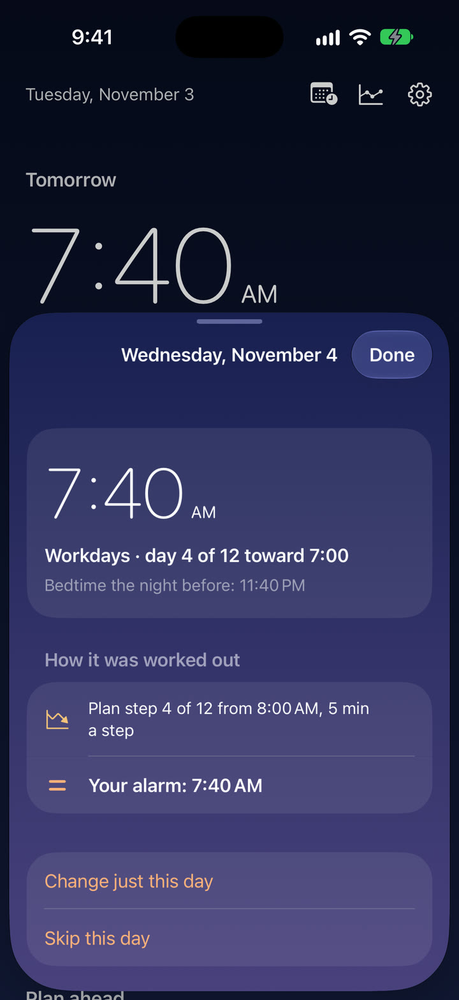
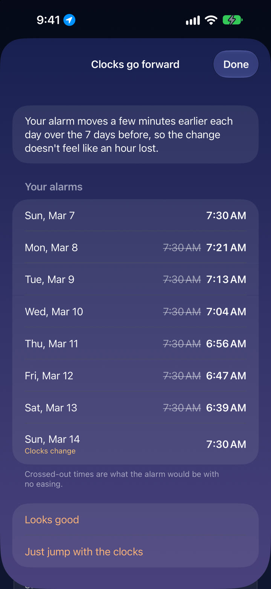
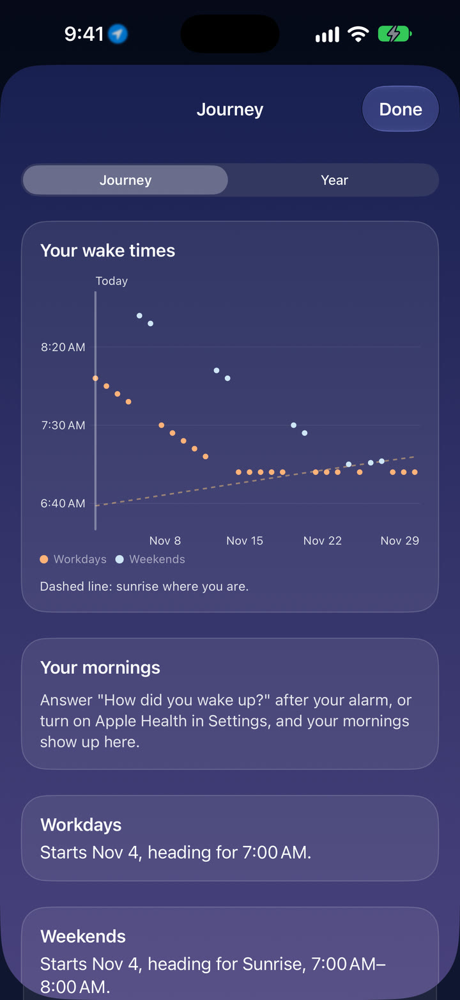

A new wake-up time
No jumping an hour overnight. It gets you there in steps your body can keep up with.
7:40 Workdays · day 4 of 12 toward 7:00An alarm for iPhone
Tell it when you want to be up. It moves your alarm there a few minutes at a time, thinks ahead about weekends, clock changes and trips, and tells you why every alarm is set where it is. All you do is wake up.
14 days of everything, free.
No account, ever.
How it works
When you need to be up, when you get up now, and how gently you'd like to get there. That's the whole setup.
Small daily steps, and smaller ones when you're moving earlier, since that's the harder direction for most body clocks.
Two weeks of alarms are always set ahead. They ring like the Clock app's, even on silent or in a Focus.
It thinks ahead
The moments that usually wreck a sleep routine are the ones Slowdawn plans for. You'll see each one coming, already handled.
No jumping an hour overnight. It gets you there in steps your body can keep up with.
7:40 Workdays · day 4 of 12 toward 7:00The hour is spread across the week around it, so the change arrives without the jolt.
6:56 Easing into the clock change, 5 of 7Sleep in a little, with the sunrise if you like. Weekends move in step, so Monday never jumps.
7:52 Weekends · Sunrise +5New job, first day of school, an early flight. Give it the date and you'll be ready a few days early.
7:15 Workdays · day 3 of 6 toward 6:45 for New jobShift a little each day before you fly, so you land closer to local time. Then keep your usual, or move it.
7:30 In London · your usual +30 minVacations end gently too. It eases you back toward your workday time instead of all at once.
7:20 Easing back after Vacation, 2 of 3Nothing hidden
An alarm that moves on its own has to earn your trust. So Slowdawn always shows its work. Tap any morning to see exactly how its time was worked out.

Twice a year
Seasonal clock changes are hard on the body. Slowdawn already knows the next one is coming and spreads the hour across the week, a few minutes a day.
It's on automatically, and it's free. Next US change: March 14, 2027.

Your journey
See the whole plan at a glance: where you started, where you are, and the day you'll arrive. Your mornings settle into a rhythm, and the chart shows them doing it.

Made with care
Every change can be eased in. Abrupt ones only happen when you choose them, and the gentlest sounds swell in over a full minute.
Small steps are easier than big jumps, and daylight helps set your body clock. Slowdawn sticks to well-supported ideas and cites its sources.
Sources: Sleep Foundation · CU Boulder · CDC
No account, no servers, no tracking. Your plans, your location and your sleep stay on your iPhone. Privacy policy
Pricing
Long enough to finish a typical plan and feel the difference. Then keep the essentials for free, or go Pro.
$0
Forever
$12.99 a year
or $1.99 a month · or $24.99 once
The trial ends on its own and never turns into a charge. US prices shown.
Slowdawn arrives on the App Store in January 2027, for iPhone with iOS 26 or later.